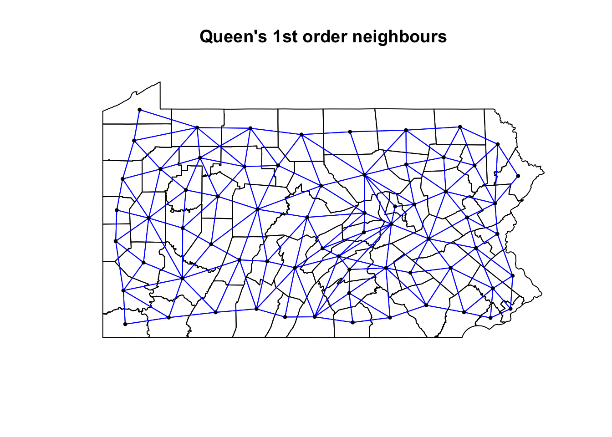
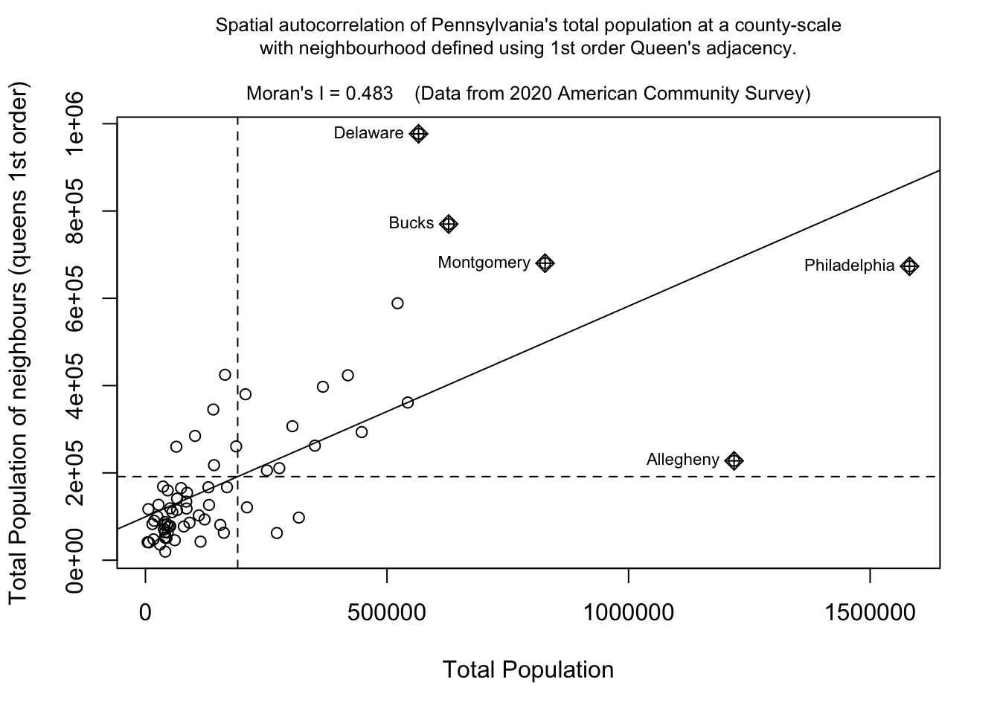
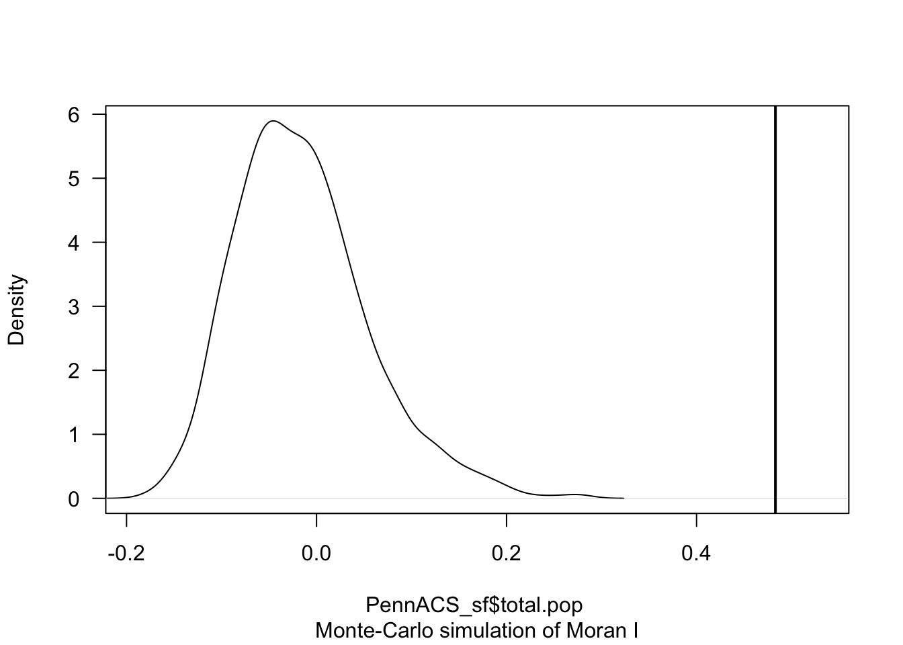
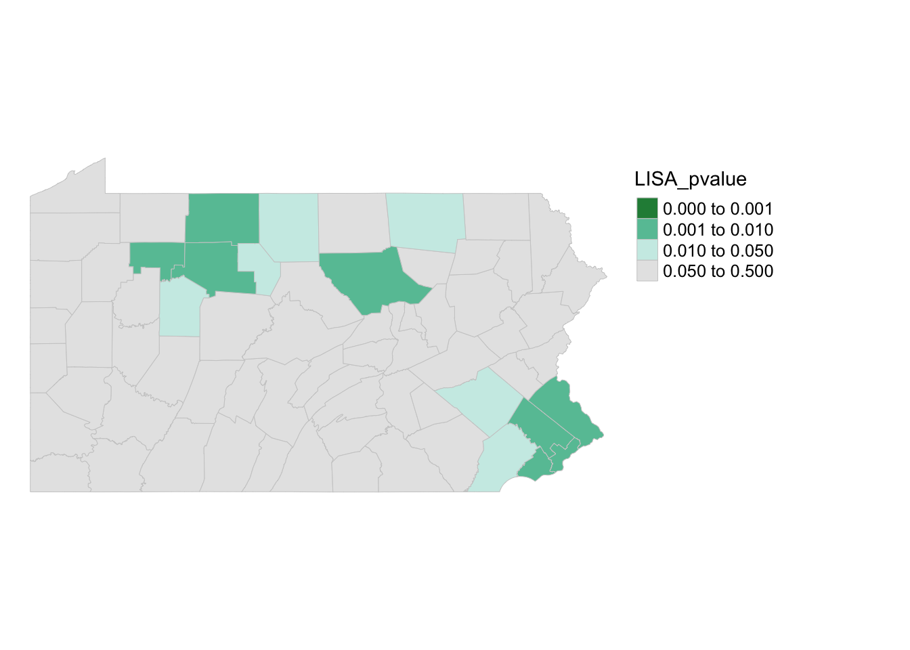
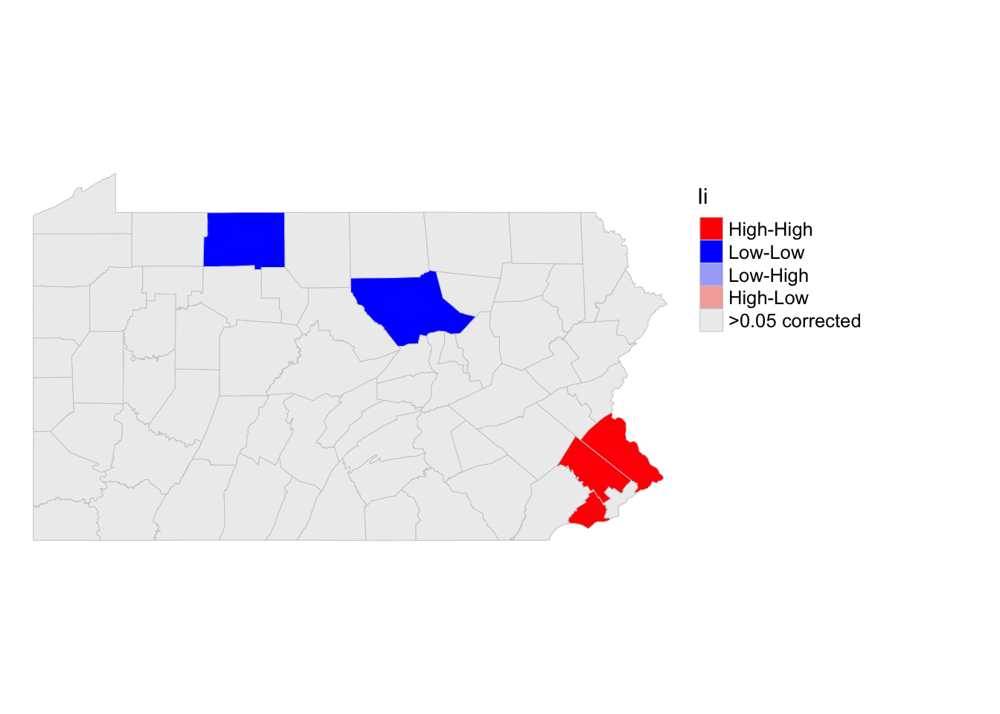

Lab 5: Moran’s I & LISA
GEOG-364 - Spatial Analysis
GEOG-364 - Spatial Analysis
Welcome to Lab 5 Week 1 !
Aims
Today’s lab explores autocorrelation and Moran’s I, covering
scatterplots hypothesis tests, and next week, Local Moran’s I, LISA. In
addition, you will build on last week’s datacamp to use tidycensus data.
THIS IS A TWO WEEK LAB.
You have two full lab sessions, then, Lab 5 is due the week afterwards.
The lab is worth 110 points and there is a rubric at the end of this page.
A. Set-up
Seriously, please don’t skip this. It’s the biggest cause of lab issues.
A1. Create a Lab 5 project
First, you need to set up your project folder for lab 5, and install packages if you are on the cloud.
POSIT CLOUD people, click here to install packages..
Step i:
Go to https://posit.cloud/content/ and make a new project for
Lab 5
Step ii:
Run this code IN THE CONSOLE to install
the packages you need.
- This is going to take 5-10 minutes, so let it run and carry on.
# COPY/PASTE THIS IN THE CONSOLE QUADRANT,
# DON'T PUT IT IN A CODE CHUNK
install.packages("readxl")
install.packages("tidyverse")
install.packages("ggplot2")
install.packages("ggstatsplot")
install.packages("plotly")
install.packages("dplyr")
install.packages("skimr")
install.packages("rmdformats")
install.packages("remotes")
remotes::install_github(repo = "r-spatial/sf",
ref = "93a25fd8e2f5c6af7c080f92141cb2b765a04a84")
install.packages("terra")
install.packages("tidycensus")
install.packages("tigris")
install.packages("tmap")
install.packages("units")
install.packages("spdep")
install.packages("sfdep")
# If you get a weird error it might be that the quote marks have messed up.
# Replace all of them and ask Dr G for a shortcut.Step iii:
Go to the Lab Canvas page and download
the data AND the lab report. Upload each one into your project
folder.
Forgotten how? See Lab 2 Set-Up.
R-DESKTOP people, click here to create your lab project.
A2. Add your data & lab template
Go to Canvas and download the lab template and datasets for this week’s lab. Should be one dataset and one lab template. Immediately put it in your lab 5 folder (or upload it if you’re on the cloud. Rename the lab template to something with your email ID, then open it.
A3. Change the YAML Code
The YAML code sets up your final report. Changing the theme also
helps us to not go insane when we’re reading 60 reports. Expand for what
you need to do.
Step A3 Instructions
Step i: Change the AUTHOR line to your personal
E-mail ID
Step ii: Go here and choose a theme out of downcute,
robobook, material, readthedown or html_clean: https://github.com/juba/rmdformats?tab=readme-ov-file#formats-gallery.
DO NOT CHOOSE html_docco - it doesn’t have a table of contents
Step iii:
Change the theme line on the template
YAML code to a theme of your choice. See the example YAML code below
Note, downcute chaos is different - see below
- Example YAML code if you want
robobook,material,readthedownorhtml_clean. You can also change the highlight option to change how code chunks look. - see the rmdformats website.
---
title: "Lab 5"
author: "ADD YOUR EMAIL ID"
date: "`r Sys.Date()`"
output:
rmdformats::robobook:
self_contained: true
highlight: kate
---- Example YAML code if you want
downcuteordowncute chaos. For white standard downcute, remove the downcute_theme line..
---
title: "Lab 5"
author: "ADD YOUR EMAIL ID"
date: "`r Sys.Date()`"
output:
rmdformats::downcute:
self_contained: true
downcute_theme: "chaos"
default_style: "dark"
---A4. Add the library code chunk
DO NOT SKIP THIS STEP (or any of them!). Now you
need to create the space to run your libraries. Expand for what you need
to do.
Step A4 Instructions
Step i: At the top of your lab report, add a new
code chunk and add the code below.
Step ii: Change the code chunk options at the top to
read
{r, include=FALSE, warning=FALSE, message=FALSE}
and try to run the code chunk a few times
Step iii: If it works, all ‘friendly text’ should go
away. If not, look for the little yellow bar at the top asking you to
install anything missing, or read the error and go to the install
‘app-store’ to get any packages you need.
# IF spdep causes issues, remove and run again. sfdep SHOULD be able to do everything spdep does, it's just pretty new.
rm(list=ls())
library(plotly)
library(raster)
library(readxl)
library(sf)
library(skimr)
library(spdep)
library(sfdep)
library(tidyverse)
library(tidycensus)
library(terra)
library(tmap)
library(dplyr)
library(tigris)
library(tmap)
library(units)
library(viridis)
library(ggstatsplot)
options(tigris_use_cache = TRUE)STOP AND CHECK
STOP! Your screen should look similar to the screenshot below (although your lab 5 folder would be inside GEOG364).If not, go back and redo the set-up!

B: Moran’s theory showcase
You are first going to practice Moran’s I hypothesis tests in R - with questions that link to lectures in Week 10 and 11 (this week and last), and the two recent discussions on Canvas. You need to answer these in your section “B. Moran’s showcase”.
You will get style marks for making your answers easy to find (sub-headings!), clear and understandable. You lose marks for saying incorrect things or providing vague examples.
Question B1.
- [100 words min] In your own words, define
spatial autocorrelation, distinguishing between
positive, zero and negative spatial
autocorrelation. Describe how each type of autocorrelation is
represented in the Moran’s I metric, and provide a real-world example
for each case to illustrate these concepts (either text or including a
picture/photo you describe).
Question B2.
- [50 words min] Explain why traditional
statistical tests become challenging when working with data that
exhibits spatial autocorrelation. <br> (hint, think about the
assumptions we normally make when taking a sample).
Question B3.
- “H0: Any”pattern” we see is spurious - the data shows Complete Spatial Randomness and is created by an Independent Random Process.”
This week we discussed how a hypothesis test, H0, represents a specific scenario we want to test, and that the p-value gives us the probability of observing some aspect of our data if that scenario were true. We also covered that the simplest baseline scenario to check is whether any observed pattern could be due to an Independent Random Process.
- [50 words min] Explain what Independent
Random Process is, and how it links with Complete Spatial Randomness and
spatial autocorrelation.
Question B4.
[50 words min] Explain what a Monte Carlo [1] process is, and how we use them to conduct a Moran’s hypothesis test. E.g. explain the figure below.
[1] Also known as bootstrapping or an ensemble process.
(Hint, lecture 11A and https://mgimond.github.io/Spatial/spatial-autocorrelation-in-r.html#app8_5 )
[1] Otherwise known as bootstrapping, ensembles or “repeating a process over and over..”

REAL EXAMPLE (REST OF LAB)
C. Wrangling Census data
The way the rest of this lab is structured is that we going to work through an example of analyzing census data using R and testing it for autocorrelation. In this section we get all the columns we need, do some quality control and get everything neat and ready.
C1. Get the data
Your data comes from the American Community Survey, a big government dataset that is used alongside the the US Census. We will be looking at county level demographic data for Pennsylvania.
Normally, I would get you to directly download your data using using
tidycensus, but the website that provides accreditation is
not working. So, I created it for you and you can simply read in the
file..
- If you haven’t already downloaded the data, GO BACK AND DO
THE SET UP!
- Now read the data into R using the st_read command and save
it as a variable called AllData
e.g.
AllData <- st_read("PennACS.gpkg")
How Dr G got the census data
I download the data directly from the American Community Survey
using tidycensus. You do not have to do
this, but just in case, you might need it in real life, here is
my code and a tutorial.
Expand for a tidycensus tutorial
(you do not need this for this
lab)
# This comes from the tidycensus library
PennACS.sf <- get_acs(
survey = "acs5",
year = 2020,
state = "PA",
geography = "county",
geometry = TRUE,
output = "wide",
variables = c(total.pop = "B05012_001",# Total population
med.income = "B19013_001",# Median income
total.house = "B25001_001",# Total housing units
broadband = "B28002_004",# Houses with internet
house.value = "B25075_001",# House value
house.age = "B25035_001"))# House age
# Then I save your data to a file and upload it to canvas
st_write(PennACS.sf,"PennACS.gpkg")To understand what I’m doing, here’s a full tutorial that I wrote a few years ago:
C2. Estimates vs margins of error
In the previous step, you should have read in the data.
Now click on/View AllData to take a look and
understand what is there.
You should now see that you have census data for Pennsylvania at a county level for these variables. In fact, for every one, it has downloaded the ESTIMATE, but also has included the MARGIN-OF-ERROR, the 90% confidence interval on our result (90% of the time our result should be within this margin of error)
The total population in each county (
total.popEandtotal.popM)Median income of people in each county (
med.incomeEandmed.incomeM)The total number of houses in each county (
total.houseEandtotal.houseM)The total number of houses with broadband in each county (
broadbandEandbroadbandM)Mean House Value in each county (
house.valueEandhouse.valueM)Mean House Age in each county (
house.ageEandhouse.ageM)
Note a few columns are slightly different here - I rearranged them after making the screenshot

C3. Tidy the data
First, let’s remove the margin of error columns using dplyr select.
They are normally very useful, but I want things as clear as possible
for this lab. We can also make a working version of the data.
- The code below shows how to select and rename columns. Copy
it over into your lab report and check it runs. You do not need to edit
anything,
select(): Lists all the columns you want to keep, leaving out the “M” columns.rename(): Renames each selected column, removing the “E” suffix for each specified column.
PennACS_sf <- AllData %>%
dplyr::select(
GEOID, NAME, total.popE,
med.incomeE, total.houseE, broadbandE,
house.valueE, house.ageE, geom) %>%
dplyr::rename(
total.pop = total.popE,
med.income = med.incomeE,
total.house = total.houseE,
broadband = broadbandE,
house.value = house.valueE,
house.age = house.ageE)C4. Calculate county areas
We currently have the TOTAL number of people/houses/beds/things in each county, but it is also useful to have the percentage or rate, especially as each of our counties is a different size. First, let’s get the areas.
- Copy this code over into your lab report and check it runs. You do not need to edit anything,
#Finding the area of each county
Area_M2 <- st_area(PennACS_sf)
# This is in metres^2. Convert to Km sq and add it as a new column
# and get rid of the annoying units format
PennACS_sf$Area_km2 <- set_units(Area_M2, "km^2")
PennACS_sf$Area_km2 <- round(as.numeric(PennACS_sf$Area_km2), 2)C5. Calculate rates and densities
We currently have the TOTAL number of people/houses/beds/things in each county, but it is also useful to have the percentage or rate, especially as each of our counties is a different size.
- Copy this code over into your lab report and check it runs.
You do not need to edit anything, This example which will
calculate the percentage of people in each county who use broadband and
save as a new column called broadband_percent.
PennACS_sf <- mutate(PennACS_sf, broadband_percent = broadband/total.house)Make a new code chunk, copy/paste this code then edit it so that you create a new column called pop.density and calculate the number of people per square km (hint, you have your new Area_km2 column..)
HINT - If
mutatedoesn’t make sense, see this tutorial: https://crd150.github.io/lab2.html#Creating_new_variables
C6. Check for empty polygons
Now.. one quirk of R is that it hates empty polygons.
IF YOU GET ERRORS PLOTTING, I BET THIS IS WHAT IS HAPPENING.
In the census we often get them, for example there might be a polygon around a lake that doesn’t actually have people living there. So first, let’s check for and remove any empty polygons. Get this code running in your report.
- Copy the code below into your lab report and check it runs. You do not need to edit anything,
# look for and remove empty polyons.
empty_polygons <- st_is_empty(PennACS_sf)
PennACS_sf <- PennACS_sf[which(empty_polygons==FALSE), ]
D. Describe the data
D1. Describe the data in words
Now, in the report, describe the dataset. Explain what the object of analysis is, the spatial domain, the spatial representation and make a bullet point list of all the variables and their units.
D2. Make some maps
tm_shape(PennACS_sf) +
tm_polygons(col="total.pop",
style="pretty", legend.hist = TRUE,
palette="Reds") +
tm_layout(main.title = "Population per county PA",
main.title.size = 0.75, frame = FALSE) +
tm_layout(legend.outside = TRUE) - Use/adjust the example code above to make chloropleth maps
of these columns in PennACS_sf.
- “med.income”,
- “house.age”,
- “broadband_percent” and
- “pop.density”
- If you are on posit cloud and it crashes, you only have to choose one or two maps and comment that you are on the cloud.
Plotting help and color palette codes
- Your maps DO NOT have to be interactive, so leave tm_mode(“plot”).
- To make your maps more interesting, see below for some common color palettes. You can also play with the style option to see different breaks (?tm_polygons) - or see here for even more options. http://zevross.com/blog/2018/10/02/creating-beautiful-demographic-maps-in-r-with-the-tidycensus-and-tmap-packages/
Common color palettes
My example uses “Reds” from colorbrewer

and from the viridis package

D3. Explain the maps.
- [100 words min] Discuss the spatial
autocorrelation, pattern and process you see in each map. e.g. Two
sentences for each map.
D4. Comment on autocorrelation
- [50 words min] From your maps, decide on a variable that exhibits the most positive autocorrelation and the variable that exhibits the most negative autocorrelation (it might still be clustered, just the furthest negative) and explain your reasoning.
E. Spatial weights
E1. Defining neighbours
This section leans heavily on the example of https://mgimond.github.io/Spatial/spatial-autocorrelation-in-r.html
In order to understand autocorrelation, we must first define what is meant by “neighboring” polygons. This can refer to contiguous polygons, nearest neighbours polygons within a certain distance band, or it could be non-spatial in nature and defined by social, political or cultural “neighbors”.
In this lab, we’ll first adopt a contiguous neighbor definition where
we’ll accept any polygon touching our feature. If we required
Rooks that at only polygons sharing a lengthof border then we would set
queen=FALSE.
- Copy/paste this code into R and run it. Nothing should happen other than queenneighbours showing up in your environment
QueenNeighbours <- poly2nb(PennACS_sf, queen=TRUE)E1. Understanding neighbours
For each polygon in our polygon object, QueenNeighbours
lists all polygons deemed to be neighbours (according to queens).
For example, this code shows all the neighbours for the first polygon in our dataset (row 1, which turns out to be Clearfield County)
PennACS_sf[1,"NAME"]
# neighbours
QueenNeighbours[[1]]You should see that Polygon 1,Clearfield County has 8
neighbors. The numbers represent the row number in PennACS_sf. So
Clearfield County is associated with these neighbours:
#
PennACS_sf[QueenNeighbours[[1]] , "NAME" ]Here instead of printing just row 1, I’m printing the rows contained in QueenNeighbours[[1]] e.g. rows 13 14 22 25 35 55 56 61. I find that the neighbours are
13 Blair County, Pennsylvania
14 Clinton County, Pennsylvania
22 Centre County, Pennsylvania
25 Indiana County, Pennsylvania
35 Jefferson County, Pennsylvania
55 Elk County, Pennsylvania
56 Cambria County, Pennsylvania
61 Cameron County, Pennsylvania
YOUR TASK
- Use the example above to write code and tell me in the report which counties are bordering Lancaster County according to Queens 1st order (HINT, it’s row 12)
E2. Mapping neighbours
We can also see a map of the spatial weights matrix. To do this we edit the plot command
coords <- st_coordinates(st_centroid(PennACS_sf))
plot(st_geometry(PennACS_sf),main="Queen's 1st order neighbours")
plot(QueenNeighbours, coords,
col = "blue", pch=16,cex=.6,
add=TRUE)
YOUR TASK
- [50 words min] Using the code above plot the spatial weights then explain what you see. You do not need to edit the code
E3. Spatial weights matrix
Now we need to turn these neighbours into a spatial weights matrix. We do this using the nb2listw command.
YOUR TASK
- Get this running in your lab report
QueenWeights <- nb2listw(QueenNeighbours,
style="W", zero.policy=TRUE)
QueenWeightsThe zero.policy=TRUE option allows for lists of
non-neighbors. This should be used with caution since the user may not
be aware of missing neighbors in their dataset. Setting
zero.policy to FALSE will return an
error if at least one polygon has no neighbor.
To see the normalised weight of the first polygon’s eight neighbors type:
QueenWeights$weights[1]You should see they have an equal weight of 1/8th .For polygon
1, each neighbor is assigned an eigth of the total weight.
This means that when R computes the neighboring income values, each
neighbor’s income will be multiplied by 0.125 before being
summed thus giving us the arithmetic mean of polygon 1’s
neighbors.
YOUR TASK
Using the code above, print the spatial weights matrix for Lancaster County
From the summary of QueenWeights ( the print out when you typed its name), write in your report how many counties there are and what the average number of neighbours each county has (hint, another word for a neighbour is a link).
F. Moran’s Scatterplot
F1. Making better plot labels
The moran.plot command will label outliers, which makes much easier to interpret the output. However, I noticed writing this that the names for each county were rather long e.g. they each included the statement that they were a county in Pennsylvania.
There are a LOAD of ways to shorten this, for example using the comma to split each string, or removing words, or shortening the string. Here is the most elegant way I can think of. Normally I would put this in data wrangling but as I’ve just seen it, let’s add it here.
PennACS_sf$ShortName <- str_remove_all(PennACS_sf$NAME,
" County, Pennsylvania")Copy the code to your lab report and run it.
Below that, in a code chunk print out the summary of the PennACS_sf dataset and use that to explain SPECIFICALLY what I did. (e.g. what is the function, what does it do, what did I apply it to and how did I save my results)
HINT - summary() commandIf you want a challenge, try and find an alternative way to achieve the same result e.g. shortening the NAMES column
F2. Moran scatterplot
We can now assess whether the pattern of a SPECIFIC VARIABLE shows autocorrelation or not using a Moran scatterplot. Here is the most simple moran.plot I can write, which is great for quick checks. But keep reading for a more professional looking one, which I recommend for your reports.
## and calculate the Moran's plot
moran.plot(PennACS_sf$total.pop,
listw= QueenWeights,
zero.policy = T)This one looks better!
# Create the Moran's plot adding labels and axes
moran.plot(
PennACS_sf$total.pop,
listw = QueenWeights,
labels = PennACS_sf$ShortName,
xlab = "Total Population",
ylab = "Total Population of neighbours (queens 1st order)",
main = "", # Leave main blank to add separately
zero.policy = TRUE
)
# This find the value of Moran's I for my title
# I'm taking one of the printouts from the moran test
MoransI <- moran.test(PennACS_sf$total.pop,
listw = QueenWeights)$estimate[1]
# Add a multi-line main title with smaller font
title( main = paste("Spatial autocorrelation of Pennsylvania's total population at a county-scale\nwith neighbourhood defined using 1st order Queen's adjacency.\n\nMoran's I =", round(MoransI, 3)," (Data from 2020 American Community Survey)"), cex.main = 0.8, font.main=1)
If you run this code chunk, you should be able to see that total population has very high positive autocorrelation (e.g. it’s very clustered as we know from the maps above). We also know that this isn’t a huge surprise as population is dominated by large cities and will be impacted by the size of individual counties. You can also see the expected outliers (Philadelphia, Allegheny (Pittsburgh).
Your tasks
It’s up to you if you want to run/keep the plot above.
But using the code above, make a nice looking Moran’s plot for the two variables you chose in Section D4. (e.g. the one you thought would be most/least clustered). If one was total.pop, choose a different one.
[100 words min]. Using your two plots, explain what a moran’s scatterplot is showing (including the meaning of the two axes), and what your two examples show - pointing out any interesting or unexpected features.
G. Moran’s Hypothesis test (week 2)
G1. Basic test interpretation
We can use a Moran’s hypothesis test to assess our theories about what is causing any clustering (see week 11 lectures).
We write our guess about the underlying process as the null hypothesis, H0. There are many H0 we could test (e.g. is the pattern similar to one caused by population density, or closer to the sea or whatever process you think is behind the pattern). But first.. it’s always important to check whether the level of clustering you see might simply be due to random chance.
To do this, we use a Moran’s test with this hypothesis:
- “H0: Any”pattern” we see is spurious - the data shows Complete Spatial Randomness and is created by an Independent Random Process.”
In terms of code, this is just as easy as the Moran.plot. Expand for a worked example for the total population variable, which we already know is very clustered.
Moran’s test worked example
moran.test(PennACS_sf$total.pop, # Variable
listw = QueenWeights, # spatial weights matrix
alternative="two.sided", # or greater or less
zero.policy=TRUE) # Ignore missing values##
## Moran I test under randomisation
##
## data: PennACS_sf$total.pop
## weights: QueenWeights
##
## Moran I statistic standard deviate = 7.2265, p-value = 4.958e-13
## alternative hypothesis: two.sided
## sample estimates:
## Moran I statistic Expectation Variance
## 0.482999652 -0.015151515 0.004751946H0: Any clustering/spatial-autocorrelation seen in a map of Pennsylvania’s county level Total Population (ACS 2020) is simply down to random chance.
- The data shows Complete Spatial Randomness and is created by an Independent Random Process. We expect that our observation would have a Moran’s I similar to I = -0.015.
H1: Pennsylvania’s county level Total Population (ACS 2020) shows a value of Moran’s I that is either unusually high OR unusually low compared to what you would expect if H0 was true. E.g. the map is so clustered or gridded that it would be very unlikely a Random Independent Process was the cause.
In this case:
The expected value of Moran’s I if H0 was true: I = -0.015
But our dataset shows a value of Moran’s I of I=0.49
The probability of this occurring by chance is p=4.958e-13 e.g. If H0 really was true, you would only see a sample with a Moran’s I value that’s more extreme than 0.49 once every 100000000000000 samples.
(Extreme? This is because I’m running a two sided test. By more extreme I mean it could be further away from the I = -0.015 in either a positive or negative direction. I=0.5 and I=-0.7 would both count as “weird”)I am happy to reject H0. We have conclusive evidence to suggest that the clustering/spatial-autocorrelation seen in a map of Pennsylvania’s county level Total Population is NOT caused by an independent random process and (as I is positive) that it is more clustered than we would expect.
Your tasks
- Using the worked example above, make and interpret a Moran’s
hypothesis test for ONE of chosen variables. Check to see if it is MORE
CLUSTERED than expected.
G2. Monte Carlo Hypothesis test
The theoretical moran’s test works really well in simple scenarios above. However, it works less well in complex scenarios where either the data is strongly skewed, or you have biases such as edge effects.
- In spatial statistics, edge effects arise when units at the study area boundaries have fewer neighbors than those at the center, potentially distorting Moran’s I calculations. With fewer surrounding data points, these boundary units may show biased spatial relationships. This means that boundary features with few neighbors can cause Moran’s I to be artificially high or low, simply because they lack surrounding data.
To address these edge effects, we often turn to the Monte Carlo version of the Moran’s I test .
Moran’s Monte Carlo test worked example
How the Monte Carlo Moran’s I Test Works:
Read more here: https://mgimond.github.io/Spatial/spatial-autocorrelation-in-r.html#app8_5
Calculate Observed Moran’s I: Compute the Moran’s I statistic for your actual dataset to measure the observed spatial autocorrelation.
Simulate Random Datasets:
Randomly shuffle the data values across the spatial units to create a new dataset where any spatial structure is removed - and calculate Moran’s I each time.
Repeat this process many times. This gives us the distribution of Moran’s I values we could expect to get under the null hypothesis that our values are randomly distributed
Compare Observed to Simulated Values: We then compare the observed Moran’s I value to this distribution. If the observed value is extreme compared to the simulated distribution, it suggests that the observed spatial pattern is unlikely to have occurred by chance.
The code is easy.
In this example, I will randomly shuffle the total population data
=999 times by setting nsim = 999 - it will print out the
results and show them graphically.
# Calculate the Moran's I value
# read below for what nsim is.
TotalPop_MoranMC <- moran.mc(PennACS_sf$total.pop, QueenWeights, nsim = 999)
# Print the result
TotalPop_MoranMC##
## Monte-Carlo simulation of Moran I
##
## data: PennACS_sf$total.pop
## weights: QueenWeights
## number of simulations + 1: 1000
##
## statistic = 0.483, observed rank = 1000, p-value = 0.001
## alternative hypothesis: greater# Make a plot
plot(TotalPop_MoranMC, main = "", las = 1)
The code above suggests that our observed Moran’s I value is unusually high compared to the 999 Moran’s I values I created from scenarios where population density showed no spatial-autocorrelation.
The pseudo p-value is written in the summary, 0.01. So in this case I know that if all the assumptions in the test are correct, that there is only a 0.001 chance (~ 1 in 1000), that the clustering I see in the map is due to random chance.
What is a pseudo p-value?
Importantly, the Monte Carlo approach gives you a ‘psuedo p-value’ that depends on the number of simulations you choose (your ensemble size). E.g. a pseudo p-value means you are looking to see what percentage of ensembles has a Moran’s I that is more clustered that your actual observation.
This means that the minimum p-value you can achieve is:
minimumP = 1/(1+nsim)
where nsim is your chosen number of simulations. You can see the relationship between your ensemble size vs p-value graphically here:
Your task
- Using the worked example above:
- Explain why edge effects might impact your results.
- Make and interpret a Moran’s hypothesis test for the SAME VARIABLE as you chose above, making sure that you have a lowest possible p-value of 0.002 or smaller.
H. LISA (week 2)
We will discuss the background of LISA in wednesdays lecture. To see how it is done in R, see the following tutorial:
Calculating LISA in R
To compute local indicators of spatial autocorrelation (Local Moran’s
I), we can make use of the localmoran() function from the
spdep package. However, this function adopts an analytical approach to
computing the p-value and as described above, it’s best to adopt a Monte
Carlo approach. This can be performed using the
localmoran_perm() function.
In this example, we will run 999 permutations for each polygon. Here’s what the code below means.
localmoran_perm()is a command that runs Local Morans I (LISA) on our data (in my case the total population with queens weights), saving the output as LISA_OutputThe object
LISA_Outputcontains several parameters including the local Moran’s statistic for each polygon, I, and two different p-values:Pr(z != E(Ii)) Sim`andPr(folded) Sim.Pr(folded) Sim. and the latter is a “folded” p-value for a one-sided test - this one works better for our uses.
To extract it, I then turn LISA_Output into an R data.frame (a special type of table). Finally we add the pseudo p-values to PennACS_sf as a new column.
LISA_Output <- localmoran_perm(PennACS_sf$total.pop, QueenWeights, nsim = 999)
PennACS_sf$LISA_pvalue <- as.data.frame(LISA_Output)$`Pr(folded) Sim`Looking at the probabilities
We can generate a map of the pseudo p-values as follows:
pal1 <- c("#238b45","#66c2a4", "#ccece6", "grey90")
tm_shape(PennACS_sf) +
tm_polygons(style="fixed", breaks = c(0, 0.001, 0.01, 0.05, 0.5),
col = "LISA_pvalue",
palette=pal1, border.col = "grey80", lwd = 0.5) +
tm_legend(outside = TRUE, text.size = .8) +
tm_layout(frame = FALSE) 
Here you can see that there are unusual spatial patterns in the north West and towards Philadelphia. But it does NOT show you if the population is more clustered or less clustered than expected.
I have marked these on the Moran’s scatterplot - see code below.
CODE TO COME, REFRESH YOUR PAGE!
Looking at the actual values.
To do this we plot the actual values - e.g. we are plotting the values from the moran’s scatterplot but ONLY coloring values that are significant/unusual compared to the average for PA. This code also accounts for false discovery rates.
Copy/paste this code. sorry there’s no easier way.
PennACS_sf$Ii <- hotspot(LISA_Output,
Prname="Pr(folded) Sim",
cutoff = 0.05, p.adjust = "fdr")
# Replace NA with ">0.05". This requires that the Ii factor be re-leveled
PennACS_sf$Ii <- factor(PennACS_sf$Ii,
levels=c("High-High","Low-Low",
"Low-High", "High-Low", ">0.05 corrected"))
PennACS_sf$Ii[is.na(PennACS_sf$Ii)] <- ">0.05 corrected"
pal2 <- c( "#FF0000", "#0000FF", "#a7adf9", "#f4ada8","#ededed")
tm_shape(PennACS_sf) +
tm_polygons(style="cat", border.col = "grey80", lwd = 0.5,
col = "Ii", palette=pal2) +
tm_legend(outside = TRUE, text.size = .8) +
tm_layout(frame = FALSE)
So we can see that there are significant “hotspots” around Philadelphia (counties that have higher than average populations compared surrounded by counties with higher than average populations). And cold spots around the north west (counties that have lower than average populations compared surrounded by counties with lower than average populations. However, there are not any significant spatial outliers (HIGH-LOW) or (LOW-HIGH).
I have marked these on the Moran’s scatterplot - see code below.
CODE TO COME, REFRESH YOUR PAGE!
Your task
- Using the worked example above and wednesdays class
materials on LISA
- Make and interpret a LISA analysis for the SAME VARIABLE as you chose above using at least 500 simulations.
- Explain why LISA can be less robust/more sensitive than Moran’s I (we will talk about this in class, and it’s linked to sample size..)
I. Advanced
You are now going to make a mini tutorial on some new data.
CODE TO COME REFRESH YOUR PAGE!